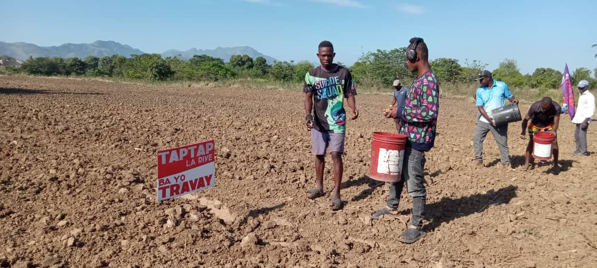

Une économie solidaire fondée à Milot en 2011
KONKRET est une initiative d'economie solidaire haïtienne organisant l'emploi des jeunes haïtiens comme la solution principale aux derives socio-économiques que connait Haiti. Nous croyons que l'agriculture peut être un moteur de transformation économique si elle est collective, coopérative et orientée vers l'emploi des jeunes.
KONKRÈT n'est pas un projet. C'est une réponse. Une réponse au découragement, au chômage, et à l'exil intérieur de notre jeunesse.
Philosophie fondatrice, KONKRET, 2011Formation et orientation initiale. Évaluation des compétences et des aspirations. Chaque jeune est accueilli avec un parcours personnalisé.
Terrain, atelier, commerce... Les partenaires agricoles et entrepreneurs locaux ouvrent leurs portes et proposent des postes concrets. La diaspora peut aussi embaucher un jeune directement depuis l'étranger.
Accompagnement et suivi tout au long du placement. KONKRET reste présent, pas seulement au début mais pendant toute la durée du parcours.
Revenus, propriété, autonomie. Les membres de la coopérative construisent quelque chose qui leur appartient collectivement et durablement.

Chaque emploi créé est documenté. Chaque jeune suivi. Nous travaillons avec des indicateurs clairs parce que l'impact sans mesure est de la rhétorique. Nos résultats sont visibles dans nos communautés.
La coopérative appartient à ses membres. Les décisions sont collectives. Les revenus sont partagés selon des règles claires et connues de tous. Pas de bénéficiaires cachés.
Nous cultivons avec les ressources disponibles localement. Pas de dépendance aux intrants importés. Pas d'exclusion par genre ou origine. La terre de Milot peut nourrir et employer.
Tu veux construire ta vie avec KONKRET ?